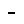
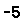

Installation
Registration
Document Structuring Conventions
Portable Document Format
Opening a Document
Page Selection
Document Information
Printing
Conversions
Measure
Options
Page Orientation
Display Settings
Page Size
Keys
Command line options
World Wide Web
Copyright
Common Problems
Other Useful Programs
Other Help Topics
If you wish to install GSview manually, see the Manual Installation topic.
Configuration will occur the first time GSview is run. If you want to change the configuration later, use Options | Easy Configure or Options | Advanced Configure.
Obtaining Ghostscript
Ghostscript Installation
Uninstalling GSview
Manual Installation
Advanced Manual Installation
Network Installation
Running GSview from the File Manager or Windows Explorer
http://www.cs.wisc.edu/~ghost/
To configure GSview, obtain and install both Aladdin Ghostscript and GSview, then run GSview.
Also remove
c:\windows\gsview32.ini
from the appropriate system directory. For Windows NT you may also need to remove gsview32.ini from user profile directories.
Remove the Ghostgum group from the Program Manager or Start menu
If you know how to edit the registry, remove the following keys:
HKEY_CLASSES_ROOT\psfile HKEY_CLASSES_ROOT\.eps HKEY_CLASSES_ROOT\.ps HKEY_CLASSES_ROOT\MIME\Database\Content Type\application/postscript
If you associated PDF with GSview you will also need to remove
HKEY_CLASSES_ROOT\pdffile HKEY_CLASSES_ROOT\.pdf HKEY_CLASSES_ROOT\MIME\Database\Content Type\application/pdf
The preferred method to uninstall Ghostscript is using Add/Remove Programs from the Windows Control Panel. To manually uninstall Ghostscript, remove the files in the gsN.NN directory where N.NN is the version number of Ghostscript.
Set the environment variable TEMP to point to a directory for temporary files. For example:
SET TEMP=c:\temp
The directory must exist and must be writeable.
First you need to install Ghostscript, plus its library files and fonts. You need the Ghostscript version listed in Overview. This version of GSview will not work with other versions of Ghostscript. Install Ghostscript in a directory c:\Aladdin\gsN.NN (Replace N.NN by the Ghostscript version number.)
Make a directory c:\ghostgum\gsview
Next install GSview for Windows by copying gsview32.exe, gsv16spl.exe, gvwgs32.exe, gsvw32de.dll, gsvw32es.dll, gsvw32fr.dll, gsvw32it.dll, gsviewen.hlp, gsviewde.hlp, gsviewes.hlp, gsviewfr.hlp, gsviewit.hlp and printer.ini to the c:\ghostgum\gsview directory.
Start GSview and select the appropriate version of Ghostscript (usually the latest). To change this later, use Options | Easy Configure.
For more control over configuration, see Advanced Manual Installation.
First correctly set the three text fields (see Advanced Configure).
On the Advanced Configure dialog, either select the checkboxes Copy printer defaults, Associate .ps files with GSview and Create Start Menu items, or perform the following three steps.
1. Exit GSview, then append printer.ini to the GSview INI file (c:\windows\gsview32.ini or c:\os2\gvpm.ini)
2. Add the .ps and .eps (and optionally the .pdf) file types to the Registry.
3. Create a Program Manager or Start Menu item for GSview.
If you have some Type 1 fonts on your system, it may be possible to tell Ghostscript to use them. See Fontmap.os2 and Fontmap.atm supplied with Ghostscript for examples. See the Fonts topic.
If you have problems, try reading the help topic Common Problems.
When a user starts GSview for the first time, or starts GSview after the version number has changed, GSview will configure the local computer.
Using a UNC path when installing GSview will not work from Windows 3.1, but does work from Windows 95.
GSview tries to maintain one configuration file for each user. If user profiles are being used under Windows 95 or NT, GSview will store the INI file in the user profile directory, as specified in the registry. If this can't be found, and the environment variable USERPROFILE is defined and is a directory, GSview will store the INI file in this directory. If this fails, GSview will store the INI file in the default location, the Windows directory. If the user profile directory exists, but is write protected, GSview will have trouble.
If you wish to stop GSview from displaying the Easy Configure when GSview is first run, or whenever GSview is upgraded, place an INI file in the GSview directory. Remember to remove this file before upgrading GSview in the future. This should contain only those entries that you wish to overwrite in the users configuration. The suggested technique is to install GSview, then configure it. Copy gsview32.ini or gvpm.ini from the system directory or your user profile directory to the GSview directory, then edit it to remove all entries except for:
[Options] Version=3.4 GSversion=601 Configured=1 GhostscriptDLL=e:\Aladdin\gs6.01\bin\gsdll32.dll GhostscriptInclude=e:\Aladdin\gs6.01\lib;e:\Aladdin\fonts GhostscriptOther=-dNOPLATFONTS -sFONTPATH="c:\psfonts"
When a user starts GSview, their INI file will normally be used. The first time GSview is run, or when the GSview version doesn't match the INI file, the following will occur:
1. The INI file in the GSview directory will be read, overriding the users INI file.
2. The list of printers will be updated from printer.ini in the GSview directory.
3. File associations (.ps, .eps, .pdf) will NOT be made or changed. If you wish to change these you must use Options | Advanced Configure.
4. Program Manager groups / Start menu items / Program objects will NOT be changed. If you wish to change these you must use Options | Advanced Configure.
If a user tries to use the GSview uninstall program, it will try to delete the GSview and Ghostscript files on the network. Make sure the GSview and Ghostscript directories are not writeable by users. To be extra safe, you may wish to remove the file uninstal.txt from the GSview directory.
To run GSview when a PostScript file is double clicked in the File Manager, the following sequence must be followed to teach File Manager about PostScript files.
From the Program Manager, run the Registration Info Editor using File | Run... then type regedit. From the Registration Info Editor select Edit | Add File Type... then enter the following fields:
Identifier = psfile Filetype = PostScript Action = Open Command = c:\ghostgum\gsview\gsview32 %1 Uses DDE = unchecked Action = Print Command = c:\ghostgum\gsview\gsview32 /p %1 Uses DDE = unchecked
Then press OK.
From the File Manager, select File | Associate then enter the following fields:
Files with Extension = ps Associate With = PostScript (gsview)
Then press OK.
That's it! Now when you double click on a PostScript file, the File Manager will run GSview. When you drop a PostScript file on the Print Manager, GSview will print the file. If you have a PostScript printer, this won't be useful. In this case you will need to remove the Print action from the registry.
For Windows 95, the configuration is instead made using Windows Explorer.
Start Windows Explorer. Select View | Options . Select the File Types tab. Select the New Type button. Enter the following fields:
Description of type = PostScript Associated Extension = PS EPS
Press the New button, then enter
Action = open Application used to perform action = c:\ghostgum\gsview\gsview32.exe
Press the OK button
Press the New button, then enter
Action = print Application used to perform action = c:\ghostgum\gsview\gsview32.exe /p
Press the OK button
Press the Close button.
Press the Close button.
The registration fee is currently AUD$40. GSview can be registered online at
http://www.ghostgum.com.au/
or by faxing or mailing the registration form which can be found in the file regorder.txt in the GSview directory. Ghostgum Software prefers that you use the online registration.
If a file does not contain DSC comments, GSview can only display the pages in the original order.
DSC conforming files start with the comment line:
%!PS-Adobe-3.0
where the number 3.0 may change and is the DSC version number. Some programs write PostScript files with a control-D as the first character of the file, followed by the comment line mentioned above. GSview will correctly report that these files are not DSC conforming, but will still display them with page selection features available. Complain to the author of the program that produced the PostScript file. To make the file DSC conforming, edit it to remove the control-D character.
DSC conforming files contain lines such as:
%%Pages: 24 %%Page: 1 1
These lines tell GSview how many pages a document contains and where they start. GSview uses this information to select individual pages.
Encapsulated PostScript Files (EPSF) are single page documents that contain a subset of the DSC comments and PostScript commands. EPS files start with the comment line:
%!PS-Adobe-3.0 EPSF-3.0
EPS files are commonly used for inclusion in other documents and for this reason require the bounding box comment:
%%BoundingBox: llx lly urx ury
where llx, lly, urx and ury are integers giving the x and y co-ordinates of the lower left and upper right corners of a bounding box which encloses all marks made on the page.
Some EPS files contain a preview of the PostScript document. This preview can be a Windows Metafile, a TIFF file, or an Interchange preview (EPSI format). For the Windows Metafile or TIFF file preview, the EPS file under DOS contains a binary header which specifies the location and lengths of the preview and PostScript language sections of the EPS file. For the Interchange format, the preview is contained in DSC comments starting with
%%BeginPreview: width height depth lines
An EPS file with a preview can be created from an EPS file without a preview using Add EPS Preview.
GSview may give warnings when documents contain incorrect DSC comments. This can be changed with Options | DSC Warnings.
When displaying, GSview ignores the page size on the Media menu, and instead uses the /MediaBox from the PDF file. If Options | EPS Clip is enabled, GSview will use the /CropBox from the PDF file.
GSview needs to Open a PDF file to count the pages. If you Select the file, GSview will not be able to Text Extract, Find, Goto Page or do any other operation that needs to know how many pages are in the document.
pdfmark link support is crude.
To convert a PostScript file to a PDF file, use File | Convert, then select the pdfwrite device.
To convert a PDF file to a PostScript file, use File | Convert, then select the pswrite device.
File | Extract does not work for PDF files. Extracting PDF pages extracts PostScript rather than PDF.
To batch convert multiple files, look at ps2pdf.bat and pdf2ps.bat in the Ghostscript directory. You will need to use gswin32c.exe instead of gs.exe. You may also need to set the Ghostscript include path using -I or the environment variable GS_LIB.
If the file contains DSC comments, pages can be selected using Next Page, Previous Page and Goto Page.
If the file does not contain DSC comments, Previous Page and Goto Page will not work. Another file should not be selected until a last page of the file has been displayed.
When a file is open, GSview will display the document filename, the current page (if available) and while the cursor is over the image, the location of the cursor in co-ordinates specified by Options | Units. The co-ordinate can be PostScript points (1/72"), millimetres or inches. The cursor location is useful for calculating bounding boxes.
The Select File command is similar to Open but it does not display the document. This command is useful for opening a document prior to printing it.
The Save As command saves a copy of the current document. This is useful if GSview is being used as a PostScript viewer by another application and you wish to save the currently displayed file.
The Close command closes the currently open document. This should be used before the current file is changed by another program. If you do not do this and GSview detects that the file length or date have changed, it will close Ghostscript and rescan the document.
See also Print.
View | Previous Page or the - button moves to the previous page.
View | Redisplay or the F5 key redisplays the current page.
View | Goto Page or the pointing hand button shows a dialog box which allows selection of the next page number to display. The Select Page dialog box shows page labels since these are likely to be more useful than a sequential page number.
View | Next Page and Home or the space bar moves to the top of the next page of a document.
View | Previous Page and Home or the BackSpace key moves to the top of the previous page.
The Previous Page, Redisplay and Goto Page commands work only if the document contains DSC comments.
View | Fit Window or the F6 key changes the display resolution to fit the entire page within the current window. Repeated use causes either the width or height of the page to fit the current window.
View | Full Screen or the F4 key displays the page full screen (without title bar, scroll bars etc.). To return to normal display, press the Escape key.
The Info command on the File menu shows a dialog box with the following information about the DSC comments in the current document.
File is the full pathname to the document.
Type is DSC, EPS, No DSC comments or Ignoring DSC Comments. EPS is an Encapsulated PostScript File - a single page document that contains a subset of the DSC comments and PostScript commands. EPS files are commonly used for inclusion in other documents. Ignoring DSC Comments is displayed if Options | Ignore DSC is selected. These may be prefixed by Ctrl-D followed by or PJL followed by. Both of these indicate that the document does not comply with the DSC because there is some garbage at the beginning of the document. To fix the former, see Common Problems. To fix the latter, do not use a HP LaserJet driver when creating PostScript documents for distribution to others.
Title is a text title that can be used when printing banner pages and for routing or recognising documents.
Date is the time the document was created.
BoundingBox specifies a box that encloses all the marks painted on the page. The four integer values are the co-ordinates of the lower left and upper right corners of the bounding box in default user co-ordinates (1/72 inch).
Orientation is the default page orientation and is either Portrait or Landscape. See the Orientation menu.
Page Order is either Ascending, Descending or Special. If Page Order is Descending, GSview automatically reverses the pages when displaying or printing so they appear in ascending order. When extracting or printing, GSview can be instructed to print pages in descending (reverse) order. Special means that pages should not be reordered.
Default Media gives the media name followed by the width and height of that media in default user co-ordinates (1/72 inch).
Pages is the total number of pages in the document.
Page gives the page label and page number.
Bitmap is the size of the display bitmap in pixels which may be useful if you are copying the displayed image to the clipboard.
Windows GDI printer uses Ghostscript to create bitmaps for each page, and prints these using the standard Windows printer driver. This is the slowest print method, but should work with most printers.
Ghostscript device uses the Ghostscript printer drivers. This is faster, but you need Ghostscript to have driver for your printer and you need to know what it is called. For example, the HP LaserJet 4 uses ljet4. See the Ghostscript documentation for more details.
PostScript printer doesn't use Ghostscript for printing PostScript files. Instead the file is sent directly to the printer.
There is a significant amount of interaction between settings on the print dialog. For example, selecting Ghostscript device disables the Properties button because this isn't relevant. More details are in the following topics.
See also Conversions and Convert.
Select Pages
Windows GDI printer
Ghostscript device
PostScript printer
Print File
Properties
The Select Pages button may be disabled if it is not supported by the print method.
The Reverse check box causes the pages to be printed in descending order. This is enabled only if the document contains DSC comments.
If you wish to print selected pages from a DSC document that has special page ordering (i.e. the pages can not be reordered), select Windows GDI printer andIgnore DSC.
By default, a monochrome bitmap is used for maximum speed. If you want colour, you will need to enable this using the Settings button.
If Fixed media is checked (the default), GSview will use the page size on the Media menu and will ignore attempts by PostScript or PDF documents to change the page size. This is useful for PDF files that contain a mix of portrait and landscape pages. If Fixed media is unchecked, GSview will set the default page size from the Media menu, but allow the page size to be changed.
Options is usually empty, but may contain Ghostscript command line options. Use with care!
This print method allows selected pages to be printed, even if a PostScript document does not contain DSC comments. It does this by rendering all pages, but only sending the requested ones to the printer. This may be very slow.
Some Ghostscript options may be added using either the Options field or the Properties button.
The uniprint button selects the uniprint device and displays a list of available configuration files (*.upp) for the uniprint device. If you select one of these configuration files, the configuration file name will be placed in the Options field of the Printer Setup. See the Ghostscript file Devices.htm for details of how to configure the uniprint device.
When a PostScript printer is connected via a serial port, it sometimes requires a Ctrl+D character to be sent after the PostScript file, and depending on how well behaved other programs are, sometimes before. This is part of the serial communications protocol used by these printers - it is not part of PostScript. The Settings dialog allows you can choose to send Ctrl+D before and/or after the PostScript file.
Some PostScript printers understand multiple languages, and require a prolog to enable the PostScript mode. For example, HP LaserJet printers (with the PostScript option) require the following prolog
^[%-12345X@PJL JOB @PJL ENTER LANGUAGE = POSTSCRIPT
and the following epilog
^[%-12345X@PJL EOJ ^[%12345X
The prolog and epilog files allow you to send a file to the printer before and after the PostScript file.
Another use of the prolog might be to invoke duplex printing
<< /Duplex true /Tumble false >> setpagedevice
If the document is PDF, Ghostscript will be used to convert the document to PostScript which will then be sent to the printer.
A page offset can be specified for each printer. The page offset is useful for correcting a mismatch between the page origin of a Ghostscript printer device and a particular printer. Increasing the X value will translate the image towards the right. Increasing the Y value will translate the image downwards.
Properties are typically used to set BitsPerPixel for a colour printer or other types of colour or density correction.
Properties are specific to a particular printer. Changing the value of the BitsPerPixel property on one printer does not change it for any other printer.
When you press the OK button in the Properties dialog box, the current settings are written to the gsview32.ini file.
Some Properties are predefined in GSview, but these may not match those available in Ghostscript. The Edit and New buttons allow you to modify available Properties for that printer. See the Edit Properties topic for more details.
There are two ways to add or edit Properties.
The first method uses the Edit or New button on the Properties dialog box.
Each property must be either a number or a string. Number properties are equivalent to the Ghostscript -d command line option. String properties are equivalent to the Ghostscript -s command line option. Each property consists of a Name and Value. These are used as -dNAME=VALUE or -sNAME=VALUE. The Value is chosen from the comma separated list of Values entered into the Edit Properties dialog box. Spaces must not be embedded in the Name or Values.
To delete a property, select it on the Properties dialog box, then press Edit, then press the Delete button on the Edit Properties dialog box.
The second method is to manually edit the GSview INI file.
For each printer, you must add two sections to the gsview32.ini file. The following example shows how to add property information for the cdjcolor driver. First add a section which gives the current values. This section, after the first character is removed, gives the options that will appear in the Property list box. The first character is s for string or d for number.
[cdjcolor] dBitsPerPixel=24 dDepletion=1 dShingling=2 dBlackCorrect=4
Next add a section which gives the values to display in the Value list box.
[cdjcolor values] dBitsPerPixel=1,3,8,16,24 dDepletion=1,2,3 dShingling=0,1,2 dBlackCorrect=0,1,2,3,4,5,6,7,8,9
GSview will also add the value [Not defined] to the listbox.
When GSview prints a file, it will give Ghostscript the contents of the [cdjcolor] section of gsview32.ini as follows:
-dBitsPerPixel=24 -dDepletion=1 -dShingling=2 -dBlackCorrect=4
If the value of a property is [Not defined], that property will not be sent to Ghostscript.
File | Convert uses Ghostscript to convert PostScript or PDF to bitmaps, PostScript or PDF.
File | Extract allows a range of pages to be copied from a PostScript document.
File | PS to EPS allows the bounding box to be updated and allows the header to be changed from PS to EPS. Read the documentation thoroughly before using this.
Edit | Add EPS Preview adds a bitmap preview to an EPS file.
Edit | Extract EPS extracts the PostScript or Preview from a DOS EPS file.
Edit | Convert to vector format uses pstoedit to convert PostScript or PDF to an editable vector format.
Edit | Text Extract uses pstotext to extract text from a PostScript or PDF document.
Edit | Copy copies the display bitmap to the clipboard. Edit | Paste To copies a clipboard DIB bitmap to a file. Edit | Convert Bitmap converts a clipboard DIB bitmap to a clipboard device dependent bitmap.
File conversions and tricks
Convert
Extract
PS to EPS
EPS Preview
User Supplied Preview
Convert to vector format
Text Extract and Find
Clipboard
Convert PostScript to PDF. File | Convert, select pdfwrite, 300dpi, With Ghostscript 5.50, fonts with non-standard encodings will be included as bitmaps. If you choose 72dpi, fonts will look rough. Ghostscript 6.0 will embed fonts.
Convert PDF to PostScript. File | Convert, select pswrite, 300dpi.
Convert Level 2 PostScript to Level 1 PostScript. File | Convert, select psmono, 300dpi, Instead of 300dpi, you should use the resolution of your printer.
Convert to a bitmap. File | Convert, select bmp16m, 72dpi.
Convert to an editable vector format (pstoedit). Edit | Convert to vector format OR convert to PDF using the method above.
Extract text (pstotext). Edit | Text Extract
Add a preview to an EPS file. Edit | Add EPS Preview. See Add EPS Preview for more details.
Remove preview from an EPS file. Edit | Extract EPS | PostScript
Display with smooth edges. Media | Display Settings. Set Text Alpha and Graphics Alpha to 4. You need a display with at least 8 bits per pixel.
Save the displayed bitmap. Edit | Copy to copy to the clipboard. To save to a BMP file, use Edit | Copy then Paste To...
Create a bitmap with smooth edges (anti-aliasing). 1. Display with smooth edges and save the display bitmap. OR 2. Convert using a bitmap device and set the following in the properties.
-dTextAlphaBits=4 -dGraphicsAlphaBits=4
You need to select a Ghostscript output device and resolution. The default list of available devices and resolutions is stored in the [Convert] section of gsview32.ini and is taken from the standard distribution version of Ghostscript 6.0. You can use other devices or resolutions.
Some Ghostscript options may be added using either the Options field or the Properties button.
All pages, individual pages or any combination may be converted. The All, Odd and Even buttons provide quick selection of pages. If a single contiguous block of pages is marked, the Odd and Even buttons will select odd or even pages within this range. The Reverse check box causes the pages to be converted in descending order.
If Fixed media is checked (the default), GSview will use the page size on the Media menu and will ignore attempts by PostScript or PDF documents to change the page size. This is useful for PDF files that contain a mix of portrait and landscape pages. If Fixed media is unchecked, GSview will set the default page size from the Media menu, but allow the page size to be changed.
See also Conversions.
See also Conversions.
%!PS-Adobe-3.0 EPSF-3.0
and then adding or fixing up the %%BoundingBox comment.
EPS files are commonly used for inclusion in other documents and for this reason require the bounding box comment:
%%BoundingBox: llx lly urx ury
where llx, lly, urx and ury are integers giving the x and y co-ordinates of the lower left and upper right corners of a bounding box which encloses all marks made on the page.
When used incorrectly, the PS to EPS command can produce PostScript files with incorrect DSC comments. Such a document will cause problems when you try to include it inside another document.
To convert a PostScript file to EPS, the original file must be a single page document. If the document contains DSC comments and is multi page, extract the desired page with File | Extract. If the document does not contain DSC comments, you will need to edit the file by hand to extract the desired page.
EPS documents must not use any of the following operators:
banddevice clear cleardictstack copypage erasepage exitserver framedevice grestoreall initclip initgraphics initmatrix quit renderbands setglobal setpagedevice setpageparams setshared startjob letter note legal a3 a4 a5
The following operators should be used with care:
nulldevice setgstate sethalftone setmatrix setscreen settransfer setcolortransfer
It is your responsibility to make sure that the above requirements are met.
To test if a document contains any of the above operators, select Options | EPS Warn and then Open the desired document. After the page has been displayed, Close the document and then display the Ghostscript messages with File | Show Messages. If any of the above operators have been used you should see lines like:
Warning: EPS files must not use ...
If you find these warnings then do not use PS to EPS. Remember to turn off EPS Warn afterwards.
A document must be displayed before PS to EPS is used.
For documents without DSC comments, PS to EPS allows a bounding box to be specified, then writes out an EPS file consisting of an EPS wrapper around the original document.
For documents with DSC comments, PS to EPS will change the first line of the file to
%!PS-Adobe-3.0 EPSF-3.0
then allows the %%BoundingBox comment to be changed or added.
For EPS documents, PS to EPS allows the %%BoundingBox comment to be changed.
PS to EPS does not clip the document to the %%BoundingBox. To do so would require changing the PostScript code itself. PS to EPS only changes the DSC comments.
If Automatically calculate Bounding Box is checked, GSview will calculate the bounding box from the non white pixels. If unchecked, you get to choose the bounding box by clicking at the left, bottom, right and top.
PS to EPS does not add a preview to a document. If you want a preview you add it with Edit | Add EPS Preview after first creating an EPS file with a correct %%BoundingBox.
See also Add EPS Preview, Extract, EPS Warn and Conversions.
1. Deselect Options | Ignore DSC
2. Make sure the document has a correct bounding box. Options | Show Bounding Box is useful for checking the bounding box. A bounding box can be added or changed using File | PS to EPS.
3. Select Orientation | Portrait.
4. Select Media | Display Settings and set a suitable resolution for the preview. If the resolution is too high it will make the EPS file excessively large.
5. Open an EPS file that does not contain a preview.
6. Select Edit | Add EPS Preview, then the preview format, then the new EPS filename. GSview will write a new file containing the original PostScript EPS file and a preview created from the display bitmap. The available preview formats are Interchange, TIFF 4, TIFF 6 uncompressed, TIFF 6 packbits and Windows Metafile. If adding an Interchange preview, the document must have an %%EndComments line, otherwise GSview may put the preview in the wrong place. An interchange preview is always monochrome. A TIFF 4 preview is a Baseline Bilevel Image (1 bit/pixel) with no compression as described in the TIFF 6.0 memorandum, but avoiding tags which are not described in the TIFF 4 specification. WordPerfect 5.1 requires a TIFF 4 preview. A TIFF 6 preview is a Baseline Bilevel Image, or a Baseline Palette-colour Image (4 or 8 bits/pixel) or a Baseline RGB Full Colour Image (24 bits/pixel) according to the TIFF 6.0 specification. TIFF 6 previews are either uncompressed or compressed with packbits. A Windows Metafile preview contains an uncompressed bitmap.
7. Reset Orientation | Portrait, and Media | Display Settings to their previous values.
To extract the PostScript or Preview section from a DOS EPS file, use File | Select File followed by Edit | Extract EPS then PostScript or Preview.
See also PS to EPS.
You can add a preview that has no resemblance to the PostScript, which is most undesirable.
http://www.geocities.com/SiliconValley/Network/1958/pstoedit/index.html
For updates to pstoedit, look at the pstoedit home page, or at
http://www.cs.wisc.edu/~ghost/gsview/pstoedit.html
To use pstoedit from within GSview, use Edit | Convert to vector format. Three dialog boxes will be shown.
The first dialog is for pstoedit settings.
Select an output Format.
Draw text as polygons should be selected if the PostScript file contains text and the output format does not support this, e.g. gnuplot. This might produce a large output file.
When Map to ISO-Latin1 is selected, pstoedit maps all character codes to the ones defined by the ISO-Latin1 encoding, which is used by HTML and MS-Windows. This is the default. If you uncheck this item, the encoding from the input PostScript is passed unchanged to the output.
If the output format does not support curves in the way PostScript does, all curves are approximated by lines. The Flatness option is used to control this approximation. This parameter is directly converted to a PostScript setflat command. Small values produce a more accurate approximation, but more line segments.
Sometimes fonts embedded in a PostScript program do not have a fontname. For example, this happens in PostScript files generated by dvips. In such a case pstoedit uses a replacement font. The default for this is Courier. Another font can be specified using the Default Font option. Some alternative font names are Courier, Helvetica and Times-Roman.
Some of the output formats support extra options. See the pstoedit manual for more details. For example, the java output format uses Driver Options to specify the name of the java class.
The second dialog (omitted if no page numbering is available) specifies the page to be converted, or if supported by the output format, a range of pages to be converted.
The third dialog specifies the output file name.
Not all pstoedit formats support bitmap graphics. If you need bitmap output, see File conversions and tricks.
For more details please read the pstoedit manual.
See also Conversions.
GSview has two methods of extracting text from a PostScript file.
The quick method extracts all text from PostScript strings.
The second method uses pstotext and Ghostscript to more accurately extract text from a PostScript document.
The method used is selected by Options | PStoText. See the appropriate topic below:
See also Conversions.
Quick Text Extract and Find
PStoText Text Extract and Find
Edit | Text Extract will extract text contained in strings from specified pages and write it to a text file. Line breaks in this text file correspond to lines in the document. Spaces in the text file correspond to spaces within strings, or to separate strings. A more effective method of extracting text is to use ps2ascii.ps supplied with Ghostscript, or to use the PStoText program listed on the Ghostscript WWW page. PStoText can be used from GSview by using Options | PStoText.
Edit | Find will search for text and display the first page that contains the text. Find asks for a search text and a range of pages in which to search. The preceding comments about extracting text from a PostScript document should be noted. Find first extracts text from the document, then searches it ignoring all spaces in both the document and the search text. Case is ignored when searching. Consequently the search text these would match both These and The serial. No information is given about where the word is located on a given page because this information is not available without a complete PostScript interpreter. Find will not work for non DSC documents or DSC documents with special page order.
Edit | Find Next will continue the search from the next page.
pstotext uses the ISO-Latin1 character set. See the pstotext documentation for more details.
http://www.research.digital.com/SRC/virtualpaper/pstotext.html
Orientation must be set to match the text direction of the document.
Edit | Text Extract will extract text from specified pages and write it to a text file.
Words can be copied to the clipboard using Edit | Copy.
Edit | Find will search for text and display the first page that contains the text. Find asks for a search text and a range of pages in which to search. The search text is first broken up into words. For each search word, a search is made to find a match anywhere within a document word. Searching for frog would find frog, frogs and bullfrogs. The wildcards '*' (zero or more characters) and '?' (any one character) are supported, but it doesn't make sense to use them at the beginning or end of a word. Wildcards do not extend beyond the word being searched. Multiple complete words may be specified, e.g. GSview is a. If the search text is found, the page containing the text is displayed and the first word highlighted. Find will not work for non DSC documents or DSC documents with special page order.
Edit | Find Next will continue the search.
For most PostScript files you should use Options | PStoText | Normal.
Options | PStoText | Dvips Cork Encoding is only relevant for PostScript files produced by dvips from TeX or LaTeX documents; it tells pstotext to use the Cork encoding rather than the old TeX text encoding. Unfortunately files produced by dvips don't distinguish which font encodings were used.
An alternative way to get a bitmap output from Ghostscript is to use one of the BMP drivers. See Print.
Paste To copies a Device Independent Bitmap from the Clipboard (if available) to a BMP file.
Convert Bitmap converts between a Device Independent Bitmap and a Device Dependent Bitmap. If the clipboard contains a Device Independent Bitmap (BMP format), this is converted to a Device Dependent Bitmap and added to the clipboard. If the clipboard does not contain a colour palette, one is created from the Device Independent Bitmap and added to the clipboard. This option is present because some applications (notably Windows Paintbrush) won't recognise a Device Independent Bitmap in the clipboard.
If Text Extract or Find are used on a document with PStoText enabled, GSview creates an index of the words in the document. If any words are marked with the mouse, Copy will copy these words to the clipboard instead of copying a bitmap. Text cannot be marked until either Text Extract or Find has been used with Options | PStoText enabled.
This dialog box shows the start location, finish location, difference between these locations and the length and angle between these locations. The start location is set when you click the left mouse button. The default start location is the lower left corner of the page. The units can be pt, mm, inch, or custom.
Custom units allows you to display coordinates as they appear in a PostScript file. Custom units are usually specified by starting with an identity matrix and then performing a series of transformations. If a PostScript file invokes landscape orientation using
90 rotate 0 -595 translate
then to display the user coordinates you would enter the following in the Calculate Transformation dialog:
Custom initmatrix 90 rotate 0 -595 translate invertmatrix Ok
The Current Transformation Matrix (CTM) is shown in upper part of the dialog. You can enter a CTM directly if you like maths. It is easier to enter values in the Custom edit fields below this, but these have no effect until one of the transform buttons (translate, rotate, scale) is selected.
See also Units.
Easy Configure
Advanced Configure
Sounds
Units
Language
PStoText
DSC Warnings
Save Settings
Safer
Save Last Directory
Button Bar
Fit Window To Page
Quick Open
Auto Redisplay
EPS Clip
EPS Warn
Ignore DSC
Show Bounding Box
Easy configure will set the correct paths for Ghostscript and copy some printer defaults to the INI file. It does not alter the registry or start menu.
c:\Aladdin\gsN.NN\bin\gsdll32.dll
Enter the correct Ghostscript include path into the Ghostscript Include Path field. This include path must include the directories where the Ghostscript library files (gs_*.ps and Fontmap) and the Ghostscript fonts (*.pfb) are located. For example:
c:\Aladdin\gsN.NN\lib;c:\Aladdin\fonts
Do NOT put a -I before the include path.
The Ghostscript Options field may be empty. If you wish to turn off the Platform Fonts feature under MS-Windows, put -dNOPLATFONTS in the Ghostscript Options field. If you wish to search for fonts not listed in Fontmap, add -sFONTPATH to this field. For example
-dNOPLATFONTS -sFONTPATH="c:\psfonts"
If you do not get the Ghostscript DLL field correct, GSview will not be able to load Ghostscript. If you do not get the Ghostscript Include Path correct, Ghostscript will not initialise and will then unload.
Selecting Copy printer defaults will update gsview32.ini from the file printer.ini.
Selecting Associate .ps files with GSview will update the registry to associate PostScript files with GSview.
Selecting Associate .pdf files with GSview will update the registry to associate Portable Document Format files with GSview.
Selecting Create Start Menu items will add GSview to the start menu.
There is no undo facility for the actions of these four checkboxes. The Associate and Start Menu actions are normally performed (with an undo facility) by the GSview setup program.
See the Installation topic.
You must have a sound driver loaded before using Wave files. Wave file sounds are not available under MS-Windows 3.0.
The events are:
Output Page: the PostScript showpage operator was executed.
No Page: an invalid page was selected. For example, pressing Prev while on the first page of a document with DSC comments.
No Number: a command required page numbering and the document did not have page numbering. For example, pressing Goto Page when viewing a document without DSC comments.
Not Open: a command required a document to be open and this was not the case. For example, pressing Goto Page when no document is open.
Error: many types of errors.
Start: GSview opened.
Exit: GSview closed.
Busy: busy at the moment, can't do what you asked.
The defaults are for No Page, Error and Busy to be a Speaker Beep and all other events to be None.
The resolution of the units can be increased by selecting Units | Fine Resolution.
See also Measure.
The Quick Text Extract and Find method does a simple extraction of PostScript strings. This method is easily confused. This is selected by the menu item PStoText | Disabled.
The PStoText Text Extract and Find method uses the external pstotext tool and Ghostscript to extract words and their co-ordinates. This method is more accurate, but there may be a long pause while pstotext and Ghostscript do the initial processing. After this, text extraction and searching should be quick. There are two modes of operation. Normal should be used for most PostScript files. Dvips Cork Encoding should be used if you have a PostScript file produced by dvips which uses Cork Encoding.
The default is Normal.
If you ask to be notified about errors and warnings, the DSC warning dialog box allows you to make the following choices: OK tells GSview to take a guess about what was probably meant (rather than what the DSC comment actually said), Cancel tells GSview to treat the DSC as being correct, Ignore DSC tells GSview to ignore all DSC comments.
If DSC Warnings is Off, GSview will assume Cancel. Documents with incorrect DSC comments will be likely to cause problems.
When the Save Settings on Exit option is checked, GSview will automatically save the above settings when you quit GSview.
When the Safer option is unchecked Ghostscript can change files.
When Save Last Directory option is unchecked, the current directory when GSview is started will be the current directory of the program that started GSview.
Help | Contents
 View | Previous Page
Go forward 5 pages
 Go back 5 pages
Increase resolution by 1.2
Decrease resolution by 1/1.2
Edit | Find
Edit | Find Next
If using the increase/decrease resolution buttons, Auto Redisplay should be set. Instead of using these buttons the Media | Display Settings command can be used. When the Button Bar option is unchecked, GSview will not display the Button Bar.
Changes in the window size will only occur when the window is resized or the page size changed; it does not happen immediately after this option is changed. Fit Window To Page is ignored for a maximized window.
If Fit Window To Page is unchecked, GSview will not resize the window and areas outside the page will be drawn in light grey. This is useful if you do not wish the window to shrink when looking at pages at low resolution. This is the default.
See also View | Fit Window.
GSview tries to preserve the Ghostscript state, but a document may still leave the Ghostscript interpreter in an unusual state or cause an error. If an error occurs, Ghostscript will abort. Ghostscript error messages are displayed using File | Show Messages. Select Redisplay to reopen the document.
If Quick Open is unchecked, GSview will restart Ghostscript before each new document or whenever the page orientation, resolution or size is changed.
For non-DSC documents, if Auto Redisplay is checked, GSview will restart at the first page.
If Auto Redisplay is unchecked, the View | Redisplay command must be used to redisplay a document after changing the Orientation, Resolution, Depth or Media.
If EPS Clip is unchecked, GSview will use the page size specified on the Media menu for EPS files. This is the default.
EPS Clip does not alter the original document, it only affects how much of the document is displayed by GSview. It does not affect printing.
See also Edit | Add EPS Preview
Warning: EPS files must not use /initgraphics
EPS Warn is not infallible. It is possible to access restricted operators without EPS Warn producing a warning. If you do get a warning, do NOT used PS to EPS.
The default for EPS Warn is unchecked.
See also PS to EPS.
The default for Ignore DSC is unchecked.
The default for Show Bounding Box is unchecked.
If the Auto command on the orientation menu is checked and a DSC page orientation comment is found (%%Orientation or %%PageOrientation), the orientation will be selected automatically.
When the Swap Landscape option is checked, GSview swaps the meaning of Landscape and Seascape. Most of the Landscape documents that I have encountered require a 90 clockwise rotation of the paper to view. However, there is no standard and some documents need to be rotated the other way. The Swap Landscape button allows GSview to automatically rotate the document the right way in response to the %%Orientation comment in the PostScript file.
See also Page Size and Display Settings.
The Resolution field sets the display resolution in dots per inch. The default for a VGA display is 96 dots per inch. This can also be changed by the resolution changing buttons on the button bar.
For DSC conforming files, pressing the right mouse button will Zoom into the page at what is usually printer resolution. Pressing the right mouse button a second time will zoom back out to normal display resolution. The Zoom Resolution field sets the zoom resolution in dots per inch.
The Depth field sets the page bitmap depth in bits per pixels for the display. Default will select the highest depth supported by your display driver. In general, you shouldn't set this higher than your actual display depth because doing so will use extra memory for the page bitmap but won't improve the display.
The Text Alpha field sets anti-aliasing for fonts. The default (use anti-aliasing) is 4 bits. To disable anti-aliasing of fonts, use 1 bit.
IMPORTANT: If you use Text Alpha, GSview will disable Platform Fonts by doing the equivalent of adding
-dNOPLATFONTS
to the Options | Configure Ghostscript Ghostscript Options field.
The Graphics Alpha field sets anti-aliasing for graphics and also for text that is too large to fit in the font cache.
Using anti-aliasing slows down drawing. Text and Graphics Alpha can only be used if your display depth is set to 8bits/pixel or higher.
Zoom will only work for DSC conforming documents.
To enlarge or shrink the entire page, use the Resolution on the Media | Display Settings dialog box, use the magnifying glass toolbar buttons.
11x17 11 x 17 inch A3 297 x 420 mm A4 210 x 297 mm A5 148 x 210 mm B4 257 x 364 mm B5 182 x 257 mm Ledger 17 x 11 inch Letter 8.5 x 11 inch Legal 8.5 x 14 inch Note 8.5 x 11 inch
A user defined size can be specified in PostScript points (1/72 inch) with the User Defined command. A size of 480x360 points at 96 dpi will give an image size of 640x480 pixels.
If a DSC media comment is found, such as
%%DocumentPaperSizes: a4 %%DocumentMedia: a4 595 842 80 white ( )
the page type will be selected automatically. If the media specification is not one of the above page types, the User Defined size will be set.
If Rotate Media is checked, the width and height of the page are exchanged. The image drawn on the page is not rotated. This affects both display and printing. Selecting A4 and Rotate Media is equivalent to selecting User Defined with a size of 842 x 595 pt. It is more common to use the settings on the Orientation menu than Rotate Media.
O, o Open and display a file. (File | Open)
C, c Close file. (File | Close)
N, n, + Next Page. (View | Next Page)
Space Next Page and Home. (View | Next Page and Home)
V, v, - Previous Page. (View | Previous Page)
BackSpace Previous Page and Home. (View | Previous Page and Home)
G, g Goto Page. (View | Goto Page)
I, i File information. (File | Info)
R, r, F5 Redisplay page. (View | Redisplay)
S, s Select file: open but don't display. (File | Select File)
A, a Save As. (File | Save As)
P, p Print all or some pages to a printer. (File | Print)
F, f Print all or some pages to a File. (File | Print) with Print to File checked.
E, e Extract some pages to another File. (File | Extract)
M, m Show Ghostscript Messages. (File | Show Messages)
< Decrease resolution by 1/1.2
> Increase resolution by 1.2
F1 Help. (Help | Contents)
Ctrl+C, Ctrl+Insert Copy displayed bitmap to clipboard. (Edit | Copy)
Ctrl+F, Find Text. (Edit | Find)
F3, Find Next. (Edit | Find Next)
F4 Full Screen. (View | Full Screen)
F6 Fit Window. (View | Fit Window)
Arrow Keys Scroll by 1/16 of a screen.
Ctrl + Arrow Keys Scroll by one screen.
Page Up Scroll up one screen (window height).
Page Down Scroll down one screen.
Home Scroll to top of page.
End Scroll to bottom of page.
gsview32 [/D] [/Tn] filename gsview32 [/D] [/Tn] /F filename gsview32 [/D] [/Tn] /P filename gsview32 [/D] [/Tn] /S[port] filename gsview32 [/D] [/Tn] /S["queue"] filename
To start GSview and display filename.ps use:
gsview32 filename.ps
To start GSview and print filename.ps using Ghostscript. This is similar to File | Print, except that you will not be prompted for a printer (it will use the printer most recently used by GSview) and GSview will exit after printing has finished.
gsview32 /P filename.ps
To start GSview and convert filename.ps to a file using Ghostscript (File | Convert) use:
gsview32 /F filename.ps
To start GSview and spool filename.ps for printing directly to a printer (File | Print File) use:
gsview32 /S filename.ps
To start GSview and spool filename.ps for printing directly to printer port LPT3: use:
gsview32 /SLPT3: filename.ps
To start GSview and spool filename.ps for printing directly to printer queue "HP DeskJet Portable" use:
gsview32 /S"HP DeskJet Portable" filename.ps
GSview will exit when the file has been spooled.
To start GSview in debug mode use:
gsview32 /D
In debug mode GSview will not remove its temporary files. This is to allow inspection of these files after GSview has finished. Debug mode also produces more verbose output for File | Show Messages.
GSview by default runs multi-threaded under Windows 95 and Windows NT, and single-threaded under Windows 3.1 / Win32s. To change this, use /T to toggle the threading mode, use /T0 to select single-thread mode and /T1 to select multi-thread mode.
Instead of opening up a second copy of GSview, you can tell GSview to open a file in an existing GSview, or if GSview is not already running, in a new window using:
gsview32 /E filename
To tell an existing GSview to exit:
gsview32 /X
GSview ignores the case of options: /p is the same as /P.
[FileOpen("filename")]
[FileExit()]
[NextPage()]
[PrevPage()]
[GoBack()]
[GotoPage(5)]
[ShowWindow(nCmdShow)]
[Minimise()]
[Maximise()]
[Command("command line")]
The [Command()] command only understands "filename" or "/P filename".
Don't sent multiple commands together. GSview won't complain, but the multithreaded asynchrononous execution within GSview means that the first command won't have been completed before the second command is received. If you need to send multiple commands, send them separately with pauses inbetween.
There are two command line options to cause GSview to send a DDE command to another copy of GSview. The /E command line option uses [Command("command line")][ShowWindow(1)]. The /X command line option uses [FileExit()]
http://www.cs.wisc.edu/~ghost/
GSview can be registered on-line at
http://www.ghostgum.com.au/
GSview can be used as a PostScript file viewer for several OS/2 and MS-Windows Web browsers. See the GSview home page for details.
Thomas Merz has written a Ghostscript manual, which is available in PDF from the above WWW site. This manual is an extract from a book written by Thomas Merz titled PostScript and Acrobat/PDF, available in English and German.
GSVIEW.EXE - A Ghostscript graphical interface Copyright (C) 1993-2000, Ghostgum Software Pty Ltd. All rights reserved.
This file is part of GSview.
This program is distributed with NO WARRANTY OF ANY KIND. No author or distributor accepts any responsibility for the consequences of using it, or for whether it serves any particular purpose or works at all, unless he or she says so in writing. Refer to the GSview Free Public Licence (the "Licence") for full details.
Every copy of GSview must include a copy of the Licence, normally in a plain ASCII text file named LICENCE. The Licence grants you the right to copy, modify and redistribute GSview, but only under certain conditions described in the Licence. Among other things, the Licence requires that the copyright notice and this notice be preserved on all copies.
Author: Russell Lang, Ghostgum Software Pty Ltd
Internet: gsview@ghostgum.com.au
Please read the Common Problems topic, the GSview Readme.htm and browse the WWW page before sending mail to the author.
GSview uses pstotext in an external DLL. pstotext was written by Andrew Birrell and Paul McJones. It is
Copyright (C) 1995-1996, Digital Equipment Corporation.
See the licence in pstotext.txt or pstotext.zip for more details. If you do not agree to the pstotext licence, delete pstotext.zip, pstotxt2.dll and pstotxt3.dll.
GSview requires the Ghostscript DLL (gsdll2.dll for OS/2, gsdll32.dll for Win32). This error message usually occurs if you don't have Ghostscript, or if GSview can't find Ghostscript.
From the GSview menu select Options | Configure Ghostscript and enter the correct Ghostscript DLL path. For example
c:\Aladdin\gsN.NN\bin\gsdll32.dll
This message also occurs if Ghostscript cannot find its initialisation files (e.g. gs_init.ps). Set the Ghostscript Include Path correctly.
If using Win32s, make sure you don't already have a copy of the Ghostscript DLL loaded by another copy of GSview. Only one copy of Ghostscript DLL can be loaded by Win32s at a time.
If you can't get GSview to run Ghostscript DLL correctly, make sure you can configure and run Ghostscript on its own.
Problem: Ghostscript Messages window says Can't find initialization file gs_init.ps.
Set the Ghostscript Include Path to point to the directory containing the correct gs_init.ps.
Problem: Ghostscript Messages window says gs: Interpreter revision (XXX) does not match gs_init.ps revision (YYY).
Set the Ghostscript Include Path to point to the directory containing the correct gs_init.ps. Don't try to display a PostScript file in the directory of an old version of Ghostscript (which will cause the old gs_init.ps to be loaded irrespective of the Ghostscript Include Path).
Problem: Ghostscript Messages window says Wrong version of DLL found. Found version XXX Need version YYY.
GSview found the wrong Ghostscript DLL. Install the required version of the Ghostscript DLL. Make sure you have only one copy of the Ghostscript DLL on your system.
Problem: GSview says that a multipage PostScript file produced by MS-Windows contains 0 pages and will only show the first page.
This is because the document does not have correct DSC comments. From the Control Panel, select Printers, Options..., then in the Print to group box click on the Printer radio button. You cannot use the Print To Encapsulated PostScript File for printing multipage files. The correct method is to connect the printer to FILE:. In addition, from the Control Panel select Printers, Options..., Advanced and then check Conform to Adobe Document Structuring Convention.
The DSC comment %%Pages: 0 means that the document does not produce any pages. That is, the PostScript showpage operator is not used. If you find a PostScript document that has multiple pages and contains the %%Pages: 0 comment, change the first line from %!PS-Adobe- to %!. GSview will then ignore the DSC comments and allow you to view all pages, but only in the original order. Complain to the author of the program that produced that PostScript file.
Some PostScript printer drivers include code that is specific to a particular printer. The PostScript output from these drivers may be unportable and may not display in GSview. If you are having this problem, try using a reasonably generic PostScript driver such as Apple LaserWriter II NT for PostScript level 2 printers, or Apple LaserWriter Plus for PostScript level 1 printers.
For Windows 95, open the printer properties then select the PostScript tab, then select PostScript Output Format = PostScript (optimize for portability - ADSC).
Problem: GSview says "Page ordering is Special..."
Your document used the DSC comment %%PageOrder: Special which means that pages can not be reliably reordered. This may prevent GSview from displaying pages in any order other than the original order. If you continue and reorder the pages, PostScript errors may occur. The only way to fix this is to regenerate the PostScript without special page ordering.
By default, Windows 95 creates PostScript files which use special page ordering. To disable this, open the printer properties then select the PostScript tab, then select PostScript Output Format = PostScript (optimize for portability - ADSC).
Problem: PostScript files produced by MS-Windows start with a Control-D.
For Windows 3.1:
Since this occurs even when the PostScript printer Conform to Document Structuring Convention checkbox is checked, this must be considered a bug in the MS-Windows PostScript printer driver. The bug fix is documented in the MS-Windows PRINTERS.WRI file. Edit the win.ini file and search for the PostScript printer section. There may be more than one. In each of these sections add CTRLD=0 as shown below.
[Apple LaserWriter II NT,FILE] CTRLD=0
For Windows 95:
The PostScript printer driver setup has an option (Properties, PostScript, Advanced) for suppressing a ^D at the start of a document. Fortunately the default is do not send ^D before job.
Problem: PostScript files produced by Word for Windows 6.0 cause a "Missing %%Pages comment" message box.
Congratulations. You have just found a mistake in the DSC comments when Word included an EPS file. Word should have surrounded the included EPS file with the lines
%%BeginDocument: filename.eps %%EndDocument
Because Word didn't do this, GSview can't tell how many pages are in the document and where they are located.
Please complain to Microsoft. There is a problem in the EPSIMP.FLT filter version 2.01 which Microsoft needs to fix.
In the interim, you have two solutions:
1. Select Options | Ignore DSC
2. Edit the PostScript file to correct the DSC comments. Search the PostScript file for all lines containing
%MSEPS Preamble
From each of these lines, search forward for the start of the included EPS file which should start with a line like
%!PS-Adobe-3.0 EPSF-3.0
Above these lines add the line
%%BeginDocument: AddedByHand
Then search for all lines containing
%MSEPS Trailer
Above these lines add the line
%%EndDocument
GSview should then be able to display the file correctly.
Problem: GSview doesn't recognise the DSC comments in files produced using the Adobe PostScript driver 4.10 for Windows 32-bit.
Do not use Tagged binary communications protocol. Change this to "Printers | PostScript tab | Advanced... | Data format group box | ASCII data"
Problem: Trying to open any file gives
Unrecoverable error: configurationerror in setpagedevice Failed to open device or install ViewerPreProcess hook: returns -26 Page size may have been too large or resolution too high. Resetting page size and resolution
Either the problem described in the error message has occurred, in which case you should reduce the page size, resolution, depth or a combination of all three. Alternatively, you may have used -dFIXEDMEDIA in the Ghostscript environment variable GS_OPTIONS. When using GSview, it is safest not to use GS_OPTIONS at all and to use Options | Configure Ghostscript | Ghostscript Options instead.
http://www.cs.wisc.edu/~ghost/redmon/
RedMon also includes a command line utility for writing a file to a Windows printer queue.
PrintFile by Peter Lerup is a Windows GUI application for sending files to a printer. It provides smart processing for text, PostScript and other files. It is available from:
http://hem1.passagen.se/ptlerup/
See the Ghostscript WWW page for more useful programs.
Show Messages
bzip2
zlib
Internals
The text in the Show Messages window can be copied to the clipboard. If no text is selected, the entire text will be copied to the clipboard. If some text is highlighted, only that text will be copied to the clipboard.
Explanations of some of the error message that may appear in the Show Messages are given in the Common Problems topic.
If you get an error message Failed to load bzip2 DLL... then you probably don't have the bzip2 DLL available. Obtain it from the same place you obtained GSview or from
ftp://ftp.cs.wisc.edu/ghost/ghostgum/
Place the bzip2 DLL in the same directory as the GSview EXE. libbz2.dll is for Win32. At this stage there is no bzip2 DLL for Win16 or OS/2.
bzip2 is Copyright 1996-2000 by Julian Seward The source code can be obtained from
http://sourceware.cygnus.com/bzip2/index.html
If you get an error message Failed to load zlib DLL... then you probably don't have the zlib DLL available. Obtain it from the same place you obtained GSview or from
ftp://ftp.cs.wisc.edu/ghost/ghostgum/
Place the zlib DLL in the same directory as the GSview EXE. zlib16.dll is for Win16. zlib32.dll is for Win32. zlib2.dll is for OS/2.
zlib is Copyright 1995-1996 by Jean-loup Gailly and Mark Adler. The source code can be obtained from
http://www.info-zip.org/pub/infozip/zlib/
Under Win32s, the GS DLL can be used by only one application at a time. Under Windows 95, Windows NT and OS/2, the GS DLL can be used by many applications at a time (provided you have enough memory). When using Win32s, GSview must unload the GS DLL while it is being used by gvwgs.exe for printing.
gsv16spl.exe is a 16 bit Windows application used by GSview to spool files from GSview Win32s. gsv16spl can not be used on its own - it must be started by GSview. It is not used by Windows 95 or NT.
gvwgs32.exe (Windows) and gvpgs.exe (OS/2) are GS DLL loaders for printing. It would be possible to use them from the command line, but since they delete the files listed on the command line it would be safer to use gswin32.exe (Win32), gswin32c.exe (Win32 console) or gsos2.exe (OS/2).